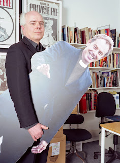
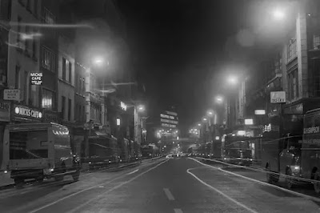
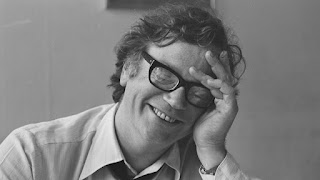
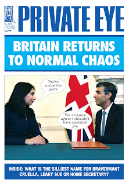

 |
| No caption needed? Photo: Edd Westmacott / Alamy Stock |
{kind=link}
This year, with poignant unintended irony, Francis retired. His colleagues at Private Eye took their one last chance to utter this hallowed greeting -- and then they banged him out. Wikipedia will explain this former Fleet Street ceremony -- either for a youngster completing their apprenticeship, when they might be 'placed in a truck and showered in printers' ink, glue and paper' or, more sedately when 'retiring employees would be walked through the print room by their colleagues whilst the printers hit their benches and machinery.' Quite how this was managed in the context of a 'Slack' team meeting will remain a mystery to me -- but there's no doubt it was a momentous occasion.
Then Francis got in the car and helped me deliver books to Salty Dogs pop-up shop in Maldon. That really felt like a retired couple's outing. We went up to London, to the Apollo Theatre and laughed at Ben Elton's 'Upstart Crow'. On the following day we had the slightly less rib-tickling experience of attending the Preliminary Hearing of Module 2B of the UK Covid-19 Public Inquiry in the rooms near Paddington, normally used for the Grenfell Tower Inquiry. Supper that evening was at the India Club in the Strand, where we had possibly our first date, almost 30 years ago. Then we listened to Bach's Goldberg Variations in the Temple Church by candlelight and took an unplanned stroll down Fleet Street, hoping for a bus.
I wonder if Fleet Street at night will ever stop feeling like a sad and ghostly place? Francis was commenting on the shells of former buildings, gutted inside but still with some facades intact. I made my usual silent genuflection to the DC Thomson building which was previously the office of The Christian Globe where Margery Allingham's sleazy grandfather ruled like a patriarch. I remembered the teenage thrill of meeting one of my uncles at the Telegraph building and being taken, starry-eyed, for lunch in Ye Old Cheshire Cheese. Then walking back along the crowded pavement and thinking, privately, that to be a book reviewer would be the highest imaginable heaven.
Francis mentioned Micks, the 24-hour, 7-day-a-week cafe, serving round the clock greasy-spoon breakfasts to print-workers, vagrants and drunks. Until he told me, I didn't know this was the cafe in Ralph McTell's 'Streets of London'.
 |
| Fleet Street in 1972 (Micks Cafe on left) photo by PC Lew Tassell https://spitalfieldslife.com/2018/09/24/on-night-patrol-with-lew-tassell/ |
{kind=link}
The bus didn't come. Fleet Street felt ineffably melancholy. Francis had been part of that national newspaper world for almost half a century. It was 1974 and he was 17 when he got his first job as an office boy on the Guardian. All through university he was involved with student newspapers and also successfully freelancing. It didn't do much for his academic status but he eventually confounded his tutors' gloomy predictions, achieved a respectable degree and went to work at the New Statesman. I lose count of the people he first met there and the lifelong friendships made -- Christopher Hitchens, Christo Hird, Julian Barnes, Martin Amis, Anna Coote, Peter Kellner. Recently, when we went to Jane Thomas's memorial event, I realised what an extensive network there had been and how little I knew of its extent. Bruce Page was the editor then, in a period of high intensity journalism and fierce office politics. He remained a dear, opinionated and steadfast friend until his death earlier this year.
 |
| Bruce Page as editor of the New Statesman 1980 (from Anne Page, taken by Susan Soames) |
{kind=link}
In the 1980s Francis wrote for the Tatler, the Guardian, the Observer, Gay News, the Daily Mirror, the Times, the Listener, Literary Review, New Socialist, Sunday Today He worked on TV and radio programmes and was part of the founding team at the Independent. I sometimes wonder whether there are any national newspapers to which he has never contributed -- the Sun, perhaps? The News of the World?
Whether he was ever more formally employed than as a weekly columnist by any of them, I'm not sure. Recently, when I've heard him explaining to people that he's been giving up his 'freelance jobs' as his chronic pain has slowed him down, and that the last one to go has been Private Eye, I've felt surprised. I've never thought of Francis's work for Private Eye as a 'freelance job'. It's felt like an integral part of our existence. I've got used to the pattern of fortnightly press days; the long phone calls from people with a story to tell and the hours of dedicated newspaper reading and documentary-watching, as the fabric of his daily life. I've understood that's just the tip of an iceberg of conversations, emails, fact-checking, freedom of information requests, fact-checking, instinct, fact-checking, persistence and letters from lawyers.
Francis was already part of the Private Eye team when we met. He'd been an occasional contributor when Richard Ingrams was the editor, but it was the arrival of Ian Hislop in 1986 that was the catalyst which changed his level of involvement. They've worked together for 35 years. When Francis began to think the unthinkable -- giving up 'the final deadline' -- his main worry was letting Ian down. Many people will know that Ian is an exceptionally kind as well as intelligent and clear-thinking person. As Francis's wife I will never cease to feel grateful for the way he has managed this period of transition -- though, in honesty, I expected no less.
It's okay to retire at 65. It doesn't mean you're dead. It just means you need a change, a bit of time, a chance to replenish your energies, to think, ideally to find a means to tackle the challenge of chronic pain. But with all that said and deeply felt, I will admit that witnessing a Goodbye instead of Hallo Wheen on October 31st has left me somewhat disorientated.
 |
{kind=link}
Francis wrote a song for that final meeting. I'll see if I can upload it here. (Tristan is the sub and Robin is the lawyer)